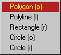
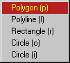

With the Tools menu tools are started to draw primitives or interactively manipulate
the drawing. Click on one of the commands in the figure below for an explanation
of it.
|
 

|
Start a zoom tool, in continues mode. Use Left Mouse and drag to zoom in.
A stack is maintained, containing all zoom areas, zoomback
and zoomout pop from the stack.
Zoomout to the complete drawing, zoom stack will be empty afterwards.
Zoom back one level.
Start a select tool, mouse Left Down in an element selects it, or mouse Left
Down + drag to select all in a box.
Start a de-select tool, mouse Left Down in an element deselects it, or mouse
Left Down + drag to deselect all in a box.
To set the layer on which primitives will be drawn.
To set the width for primitives to be drawn.
Choose the tool to draw a primitive
Start a edit tool.
Edit element when Left Down mouse click is in a selected element.
At that moment handles on the element will enable to manipulate the element.
Start a delete tool.
Delete element when Left Down mouse click is in a selected element.